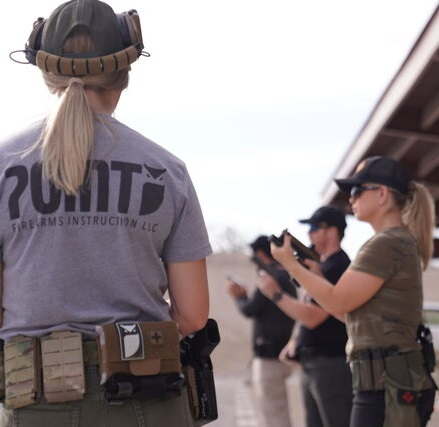
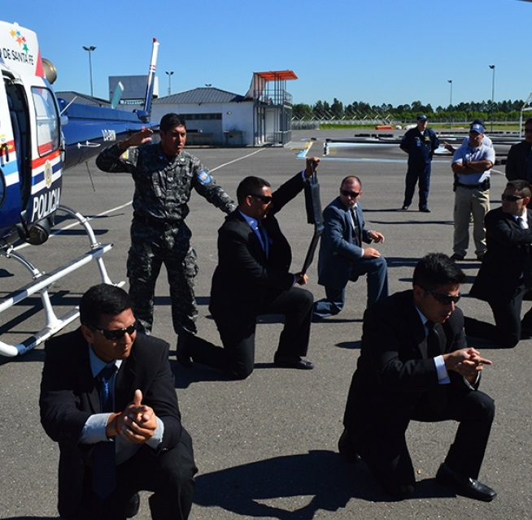
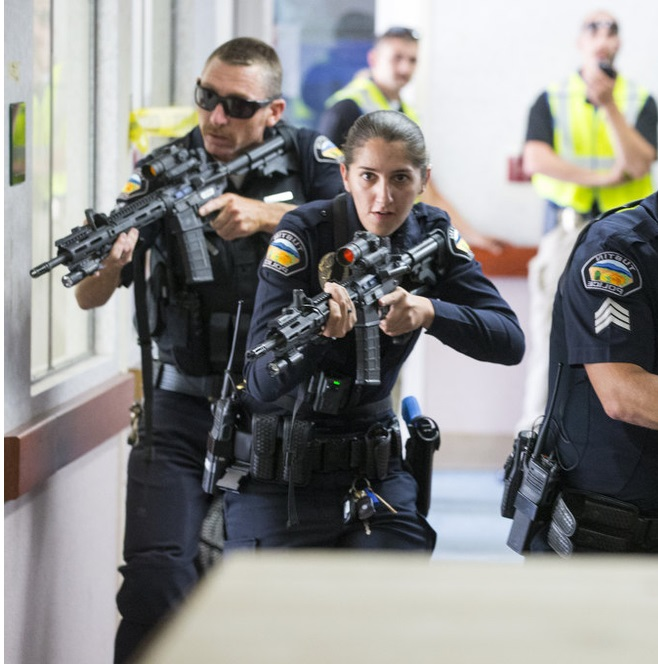

Introduccion al Tiro
Este curso está diseñado para quienes desean iniciarse en la práctica de tiro, ya sea con fines defensivo o deportivos y/o estén interesados en hacer los trámites necesarios para adquirir un arma por primera vez.Durante el curso se verán los aspectos prácticos y teóricos fundamentales para poder ser un tirador y se explicarán las aspectos legales que regulan la actividad. Al finalizar el curso se entrega la documentación necesaria para iniciar los trámites para comprar un arma. Incluye práctica de tiro con 50 disparos.
Custodia V.I.P
El Curso contará con un equipo de instructores profesionales con larga experiencia específica en la preparación y entrenamiento de protectores profesionales, equipos de Custodia VIP, Fuerzas Especiales y grupos SWAT. Son especialistas en los aspectos técnicos propios de la función (técnicas de custodia avanzada, tiro, conducción defensiva y ofensiva, emergentología médica, explosivos, CQB y técnicas sniper entre otros), en la administración y selección de sus recursos humanos, el planeamiento de su logística y la explotación de las fuentes de inteligencia. El Director de este Curso coordina actividades de capacitación en Argentina, Brasil, Colombia, Ecuador, España y otros países.
Tiro Defensivo

Este curso es el primer paso para brindar a los tiradores habilidades básicas defensivas utilizando un arma de fuego. Se abordan las técnicas iniciales respecto al desenfunde, primeros disparos, solución de interrupciones, etc. Para cerrar el curso se pondrá a prueba la capacidad cognitiva del cursante al tener que enfrentar ejercicios de toma de decisiones básicos mientras hace disparos efectivos sobre los blancos. Una vez finalizado el curso el tirador tiene la posiblidad de capacitarse en cursos de mayor complejidad y técnicas intermedias o avanzadas.
Tiro Nocturno o baja visibilidad

Este curso esta diseñado y pensado para tiradores defensivo, hombres de protección y legítimos poseedores de un arma de fuego para protección del domicilio, que ya tengan experiencia previa y que tengan capacidad de manejar y desplazarse con un arma de forma segura, que desean aprender el empleo táctico y técnico de la lámpara en conjunto con su arma de fuego en condiciones de obscuridad y lugares cerrados con escasa iluminación con fines defensivos y de preservación de la vida.
C.Q.B
El Tiro CQB (Close Quarters Battle) o tiro de combate próximo o en espacios cerrados se caracteriza por las condiciones en las que se ejecuta, como son: alto nivel de estrés , distancias muy cercanas y acciones muy rápidas. Su instrucción es la más exigente y realista. El operador de un arma que va a realizar tiro de estas características (CQB) está sometido a un alto nivel de estrés y se espera de él una respuesta inmediata y precisa (según nuestro marco legal), es por ello que se necesita una formación especializada en este tipo de escenarios.